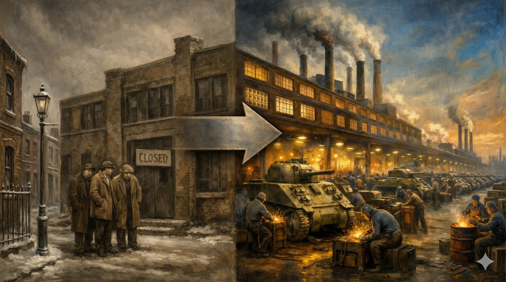
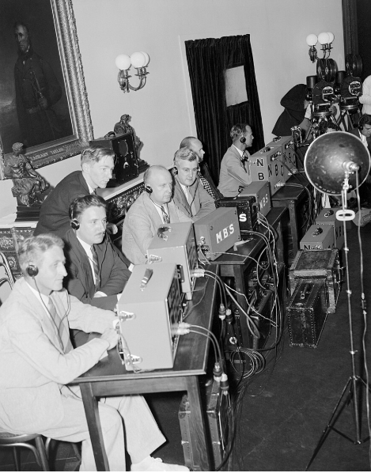
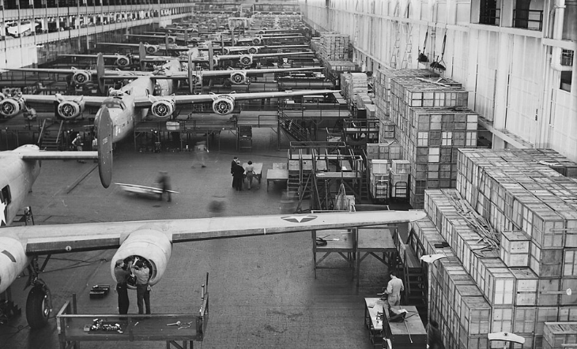
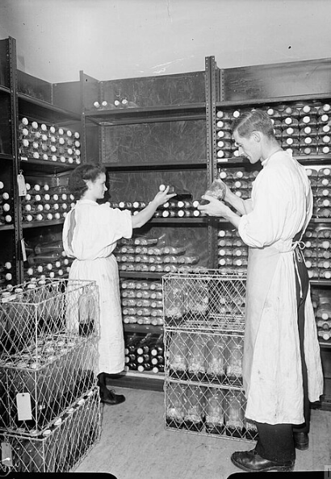
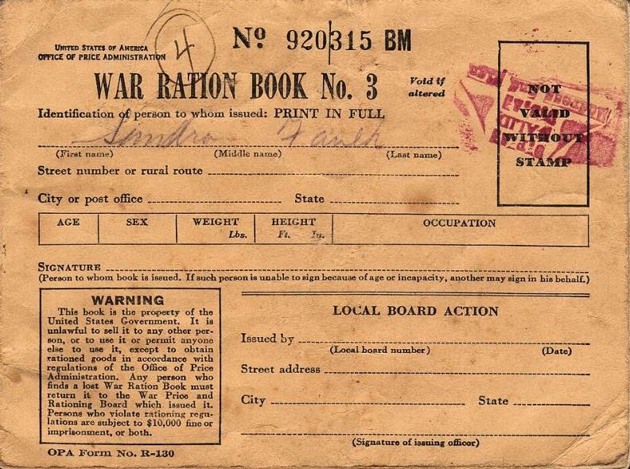
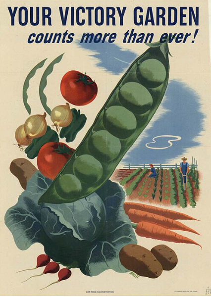
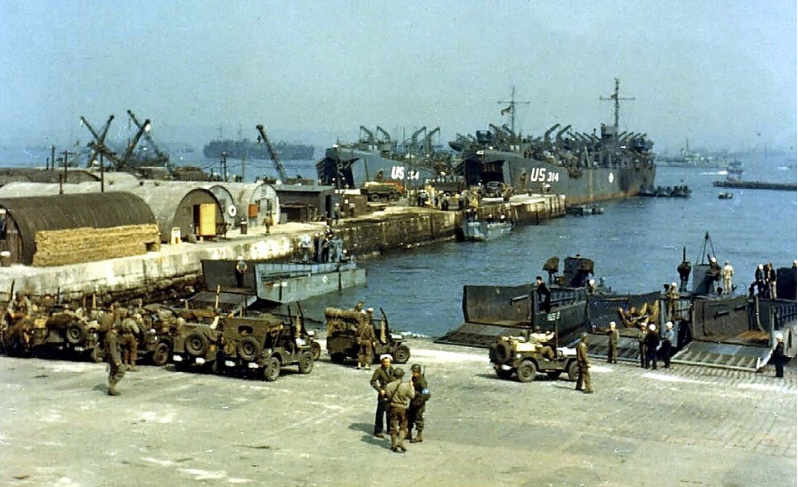
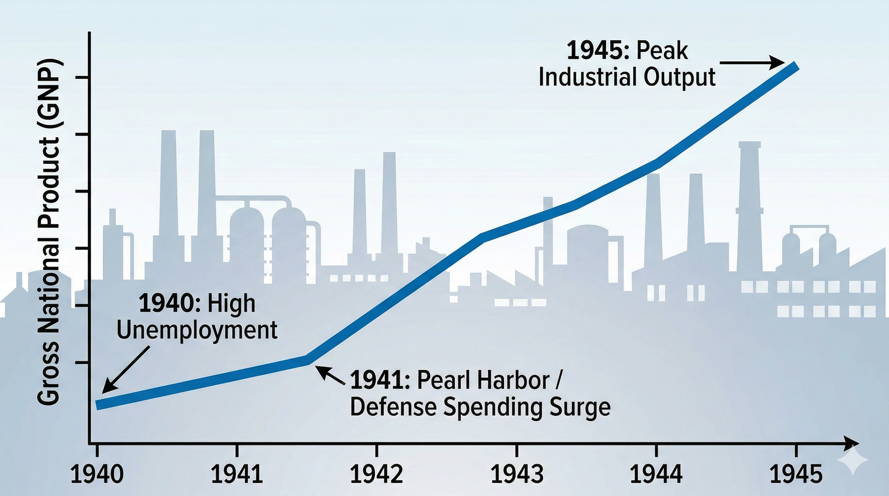

Core Objectives
- Analyze the effectiveness of the War Production Board (WPB) in converting peace-time industries to war manufacturing and its impact on the Great Depression.
- Evaluate the role of scientific research (OSRD) in the development of the atomic bomb (Manhattan Project), radar, and medical advancements like penicillin.
- Trace the impact of the war on daily civilian life, including rationing, victory gardens, and the purchase of war bonds.
Key Terms
War Production Board (WPB) | Office of Price Administration (OPA) | Rationing | Manhattan Project | J. Robert Oppenheimer | General Leslie Groves | Radar | Penicillin | Victory Gardens | Liberty Ships | Office of Scientific Research and Development (OSRD) | Deficit Spending | Gross National Product (GNP)
Introduction | Forging the Tools of Victory
In the chilling winter of 1940, President Franklin D. Roosevelt warned the American people that they could no longer remain isolated from the world's chaos, calling upon the nation to become the "great arsenal of democracy". At that time, the U.S. military was relatively small, and the economy was still entangled in the Great Depression. However, through unprecedented government investment and total economic mobilization, the nation transformed into a global industrial powerhouse. This chapter explores how American factories, scientific laboratories, and civilian households united in a culture of shared sacrifice to overwhelm the Axis powers and secure an Allied victory.

Caption: The transition from the Great Depression to wartime prosperity required an unprecedented injection of federal capital and the total restructuring of domestic industry toward military objectives.
Analysis Question: How did government intervention fundamentally alter the trajectory of the American economy between 1940 and 1945?
Mobilizing Industry and Innovation
To meet the demands of global warfare, the United States had to completely overhaul its stagnant economy and leverage its brightest minds. The federal government utilized massive deficit spending to stimulate industrial growth, effectively ending the Great Depression while establishing the War Production Board to oversee the rapid shift from civilian goods to military hardware. Simultaneously, the Office of Scientific Research and Development was created to give Allied forces a critical technological advantage, leading to groundbreaking developments like advanced radar systems, mass-produced penicillin, and the highly classified atomic bomb.
The Industrial Giant Awakens
In the chilling winter of 1940, as Nazi Germany consolidated its grip on Europe and the Empire of Japan expanded its reach across Asia, President Franklin D. Roosevelt delivered one of the most consequential fireside chats of his presidency. He warned the American people that the United States could not remain an island of tranquility in a world of chaos. He famously declared that the nation must become the "great arsenal of democracy." At that moment, however, the "arsenal" was largely a theoretical concept. The United States military was ranked eighteenth in the world, smaller than that of several minor European powers, and the economy was still entangled in the lingering web of the Great Depression. Millions remained unemployed, and the massive industrial infrastructure of the nation was geared toward the production of vacuum cleaners, refrigerators, and passenger cars rather than the tools of modern warfare.
The transformation from a stagnant, depressed economy to a global industrial powerhouse was the result of a deliberate and massive shift toward deficit spending. For a decade, New Deal programs had utilized government funds to create jobs, but the scale of wartime spending dwarfed those earlier efforts. The federal government began pouring billions of dollars into military contracts, effectively acting as a massive engine for industrial growth. This flood of capital provided the stimulus that finally broke the back of the Great Depression. As factories reopened and expanded to meet government orders, unemployment virtually disappeared. The Gross National Product (GNP), which measures the total value of all goods and services produced by a nation, began a climb that was nothing short of miraculous. Between 1940 and 1945, the GNP nearly doubled, and the average national income saw a similar surge, fundamentally altering the economic status of the American middle class.

Student Analysis Question: How did President Roosevelt's radio addresses help shift American public opinion and economic policy away from the Great Depression toward massive industrial mobilization?
Checkpoint
1. What was the primary effect of massive wartime deficit spending on the American domestic economy?
The War Production Board and Mass Production
The sheer scale of this economic reorientation required a centralized management system. To coordinate this Herculean effort, Roosevelt established the War Production Board (WPB). The WPB was granted sweeping authority over the American economy, acting as the primary architect of the nation's industrial output. Its primary task was to oversee the conversion of existing peace-time industries into war-manufacturing centers. The board decided which materials—such as steel, aluminum, and rubber—would be prioritized for military use and which civilian industries would be forced to shut down or adapt. The most visible example of this conversion was the American automobile industry. In February 1942, the production of private passenger cars was halted entirely. Within months, the factories that had once produced civilian vehicles were churning out B-24 Liberator bombers, tanks, and armored scout cars. At the massive Willow Run plant in Michigan, Henry Ford applied his revolutionary assembly-line techniques to aviation, eventually producing one bomber every sixty-three minutes.
The "miracle of production" was not just about changing what factories made; it was about reimagining how they operated. Industrialist Henry J. Kaiser became the face of this new efficiency in the shipbuilding industry. Recognizing that the war in both the Atlantic and Pacific depended on the ability to move vast amounts of troops and supplies, Kaiser applied mass-production principles to the creation of Liberty Ships. These standardized cargo vessels were designed for durability and ease of construction. Before the war, it often took nearly a year to build a single merchant ship. By 1942, Kaiser’s shipyards had reduced that time to an average of forty-five days. In one legendary demonstration of American industrial might, a Kaiser shipyard assembled a Liberty Ship in just four days. These vessels became the vital arteries of the Allied war effort, ensuring that the "Arsenal of Democracy" could project its power across thousands of miles of ocean despite the constant threat of enemy submarines.
Beyond shipbuilding and aviation, the WPB managed the distribution of raw materials to ensure no bottleneck could stall the front lines. This meant the government had to intervene in the very fabric of private enterprise, setting quotas and allocating resources like copper and rubber that were once freely traded. This intervention was the ultimate expression of "Total War," where every resource of the state was harnessed for a single military objective. The result was an industrial output that the world had never seen. By 1944, American factories were producing more than twice as much war material as all the Axis nations—Germany, Italy, and Japan—combined. This massive disparity ensured that Allied commanders always had a surplus of equipment, allowing for the massive, material-heavy offensives that characterized the latter years of the war.

Student Analysis Question: How did the War Production Board's mandate to halt civilian automobile manufacturing directly impact the production capabilities of military aviation facilities like Willow Run?
Checkpoint
1. What was the primary function of the War Production Board (WPB) during the mobilization effort?
The OSRD and Medical Miracles
While the assembly lines of the Midwest produced the steel and muscle of the war effort, the laboratories of American universities and secret government sites produced its "brain." In 1941, Roosevelt created the Office of Scientific Research and Development (OSRD) to mobilize the nation's scientific community. The OSRD was tasked with a singular goal: to ensure that American forces possessed a technological edge over the Axis powers. This collaboration between the military, private industry, and academia created advancements that would reshape the 20th century, ranging from life-saving medicines to the most destructive weapon in human history.
One of the OSRD's most immediate and humanitarian successes was in the field of medicine. Historically, more soldiers died from infection and disease than from actual combat wounds. The OSRD coordinated the mass production of penicillin, the world's first "miracle drug." Before the war, penicillin was a laboratory curiosity discovered by Alexander Fleming, but it was difficult to produce in large quantities. Under the pressure of wartime necessity, American scientists and chemical companies developed new deep-tank fermentation techniques that allowed for the production of millions of doses. By the time of the D-Day invasion in 1944, enough penicillin was available to treat every wounded soldier in the Allied forces. This medical breakthrough saved hundreds of thousands of lives and marked the beginning of the antibiotic era in modern medicine, fundamentally changing how humanity treated bacterial illness.

Student Analysis Question: Why was the mass production of penicillin considered a critical medical breakthrough for the Allied forces leading up to the invasion of Europe?
Checkpoint
1. What was the central mission of the Office of Scientific Research and Development (OSRD)?
Radar and the Atomic Threat
Technological innovations also revolutionized the way the war was fought in the air and at sea. The development and refinement of radar (Radio Detection and Ranging) allowed the Allies to "see" enemy aircraft and ships from great distances, regardless of weather conditions or time of day. Radar was instrumental in the Battle of Britain, allowing the Royal Air Force to intercept German bombers, and it later became a standard feature on American naval vessels. It helped hunt down Japanese carriers in the Pacific and German U-boats in the Atlantic. Similarly, sonar technology was improved to track submerged submarines using sound waves. These tools stripped the Axis of the element of surprise, turning the tide in the grueling Battle of the Atlantic and protecting the vital Liberty Ships that carried the nation's industrial output. Without these "invisible" eyes, the Allied supply lines would have been severed by the German "wolf pack" submarine tactics.
However, the most significant and secret undertaking managed by the government was the Manhattan Project. Triggered by a 1939 letter from physicist Albert Einstein—who warned that Nazi Germany was investigating the possibility of a weapon utilizing nuclear fission—the United States launched a top-secret program to develop an atomic bomb. The project was a massive, decentralized operation involving tens of thousands of workers and research facilities in Tennessee, Washington, and New Mexico. The Manhattan Project was led by two men of starkly different temperaments: General Leslie Groves, a pragmatic and disciplined military officer who oversaw the construction and logistics, and J. Robert Oppenheimer, a brilliant and visionary physicist who directed the scientific work at the Los Alamos laboratory.
The challenges facing Oppenheimer and his team were immense. They had to solve complex problems in theoretical physics while simultaneously designing the precision engineering required to trigger a nuclear explosion. This required the refinement of uranium and the production of plutonium on an industrial scale at sites like Oak Ridge and Hanford. The project operated under a cloak of total secrecy; even Vice President Harry Truman was unaware of its existence until he assumed the presidency. The success of the Manhattan Project was confirmed in July 1945, when the first atomic bomb was successfully detonated in the New Mexico desert. This achievement not only provided the weapon that would eventually force Japan's surrender but also ushered in the nuclear age, fundamentally changing global diplomacy and the nature of warfare forever. The project represented the ultimate marriage of American scientific genius and industrial capacity.

Student Analysis Question: How did the Allies' use of newly developed radar technology alter the strategic dynamics of the air and naval wars against Axis forces?
Checkpoint
1. How did radar and sonar technology impact the Allied war effort at sea?
The Home Front
The scale of World War II meant that the battle was fought just as fiercely in American kitchens and backyards as it was overseas. To sustain the immense industrial output required for victory, the federal government had to manage domestic consumption and call upon citizens to fund the war effort. This section examines the profound daily impact of the war on civilians, detailing the nationwide culture of shared sacrifice, the implementation of rationing, and the enthusiastic public participation in conservation and agricultural drives.
Shared Sacrifice and Daily Life
The mobilization of the "Arsenal of Democracy" was not confined to factories and laboratories; it reached into every American kitchen, backyard, and wallet. For the civilian population, the war meant a complete departure from the "rugged individualism" of the past and a move toward a culture of shared sacrifice. Because the government was redirecting vast quantities of metal, fuel, and food to the military, the domestic market faced severe shortages. To manage this scarcity and prevent the economy from overheating, the federal government took unprecedented control over the daily lives of its citizens, essentially regulating what people could eat, where they could drive, and what they could wear.
The Office of Price Administration (OPA) was established with the critical task of fighting inflation. With the GNP rising and millions of workers finally earning steady wages after years of poverty, the demand for limited goods threatened to drive prices beyond the reach of the average family. The OPA responded by freezing prices on thousands of consumer items and implementing a strict system of rationing. Every American household was issued ration books containing stamps or coupons that were required for the purchase of essential items such as meat, sugar, coffee, butter, gasoline, and shoes. Money alone was no longer enough to buy these goods; without a coupon, the purchase was illegal. This system was designed to ensure that no one—regardless of wealth—could hoard supplies at the expense of others, making "fair share" the law of the land.

Student Analysis Question: What specific domestic economic conditions prompted the federal government to establish the Office of Price Administration and mandate the rationing of consumer goods?
Checkpoint
1. Why did the federal government implement a strict system of rationing during the war?
Victory Gardens, Bonds, and Conservation
To supplement the limited food supplies provided through rationing, the government launched a massive propaganda campaign encouraging citizens to plant Victory Gardens. Americans were urged to transform their lawns, flower beds, and even vacant city lots into small vegetable farms. The response was overwhelming and immediate. By 1943, there were more than 20 million Victory Gardens across the country, producing nearly 40 percent of the vegetables consumed in the United States. This movement did more than provide food; it gave civilians a sense of direct participation in the war effort. Every tomato grown at home was seen as a contribution to the soldier's mess kit on the front lines, fostering a powerful sense of national unity and purpose. Schools, civic groups, and local governments all competed to see who could produce the most food, turning gardening into a patriotic competition.
The war also required a massive financial commitment from the public to sustain the deficit spending required for mobilization. While the government increased taxes significantly, it also relied heavily on the sale of war bonds. These bonds were essentially loans from the people to the government, to be paid back with interest after the war. Bond drives became major cultural events, often featuring Hollywood celebrities, musicians, and returning war heroes who traveled the country to rally public support. Buying a war bond was presented as a patriotic duty, allowing those who could not fight in the military to "invest" in the victory. Over the course of the war, the government raised billions of dollars through these drives, which not only funded the "Arsenal of Democracy" but also helped control inflation by removing excess cash from the hands of consumers.
Finally, the home front was characterized by an intensive effort to recycle materials vital to the war effort. Scrap drives were organized to collect rubber, tin, aluminum, and even waste fats from cooking. The fats were particularly valuable because they could be used to produce glycerin, a key ingredient in explosives. Children were particularly active in these drives, scouring their neighborhoods for old tires or discarded metal that could be melted down and forged into tanks or shells. Schools often held "scrap metal days" where students would bring in everything from old toys to bedsprings. This culture of conservation and shared responsibility created a domestic environment where every action—from saving a tin can to skipping a Sunday drive to save gasoline—was framed as a vital step toward defeating the Axis powers. The war had effectively mobilized not just the industry, but the very habits of the American people.

Student Analysis Question: In what ways did the cultivation of Victory Gardens serve both a practical economic purpose and a psychological purpose for the American home front?
Checkpoint
1. How did Victory Gardens contribute to the American war effort?
The Economic and Social Legacy
The total mobilization of the American economy did more than just win the war; it permanently altered the nation's social fabric and its future economic trajectory. The desperate need for wartime labor forced a re-evaluation of traditional roles, opening unprecedented opportunities for women and minorities on the factory floor. This section analyzes these dramatic demographic shifts, the rise of the military-industrial complex, and how America emerged from the conflict not just victorious, but as a dominant global economic superpower.
The Military-Industrial Complex and the Changing Workforce
The total mobilization of the American economy for World War II did more than just win the war; it permanently transformed the relationship between the federal government and private industry. This era saw the emergence of what would later be called the "military-industrial complex," a partnership where the government became the primary customer for the nation's largest corporations. Because the need for war material was so urgent, the government favored companies that already possessed the infrastructure to scale up production rapidly. As a result, the top 100 American corporations received approximately two-thirds of all war contracts, leading to a significant consolidation of economic power that would persist in the post-war era. This concentration of wealth helped birth a new era of corporate dominance in American life.
This industrial expansion also triggered a dramatic shift in the American labor force. With more than 16 million men joining the military, the nation faced a desperate labor shortage at the very moment it needed to increase production. This crisis forced a re-evaluation of long-standing social and racial hierarchies in the workplace. For the first time, millions of women, African Americans, and other minority groups were recruited into high-paying industrial jobs that had previously been the exclusive domain of white men. This demographic shift not only fueled the "Arsenal of Democracy" but also sowed the seeds for future social movements as these groups gained economic independence and a new sense of their own importance to the nation's success. The factory floor became a laboratory for social change that would boil over in the decades following 1945.
Labor unions also played a pivotal role in maintaining the flow of production. To ensure that the war effort was never interrupted by industrial disputes, major unions signed "no-strike" pledges for the duration of the conflict. In exchange, the government helped mediate disputes and encouraged companies to improve safety and working conditions. This cooperation was essential; any delay on the assembly line was viewed as a threat to the lives of soldiers in combat. While there were occasional "wildcat" strikes, the overwhelming majority of American workers remained at their posts, out-producing the Axis powers to an extent that made their defeat inevitable. The war years were a high-water mark for union influence and government-labor cooperation.

Student Analysis Question: How did the demographic composition of the American industrial workforce during World War II compare to the traditional labor hierarchies of the pre-war era?
Checkpoint
1. How did the labor shortage during the war affect social hierarchies in the workplace?
Industrial Dominance and the Post-War Legacy
By 1944, the United States was producing more than double the war material of all the Axis nations combined. This industrial dominance ensured that Allied commanders always had the equipment, fuel, and ammunition necessary to launch massive offensives like the invasion of Normandy. The sheer volume of material—from millions of rounds of ammunition to tens of thousands of trucks—overwhelmed the German and Japanese economies, which simply could not keep pace. When the war finally ended in 1945, the United States had transformed from a struggling, depressed nation into a global economic and military superpower. The "Arsenal of Democracy" had not only secured a victory over tyranny but had also laid the foundation for decades of American prosperity and global leadership in the second half of the 20th century. The mobilization had proved that American democracy, when pushed, possessed an industrial engine that no other system could match.
The legacy of this period was the creation of a "warfare state" that remained partially mobilized even after the fighting stopped. The technologies developed by the OSRD—like radar and penicillin—became the foundation of new civilian industries, from commercial aviation to modern medicine. The massive investments in infrastructure, from shipyards to research labs, ensured that the United States would lead the world in innovation for the next fifty years. Most importantly, the war had taught the nation that the federal government could successfully manage the economy on a massive scale to achieve a national goal, a lesson that would influence policy from the G.I. Bill to the Space Race.

Student Analysis Question: How did the sheer volume of American industrial output directly contribute to the Allied military strategy and the ultimate defeat of the Axis powers?
Checkpoint
1. By 1944, how did American industrial production compare to that of the Axis powers?
Data and Debate: The Miracle of Production
The War was Won on the Assembly Line

Caption: Victory in modern total war relied less on the tactical superiority of individual weapons and more on the aggregate industrial capacity to manufacture, deploy, and rapidly replace military assets on a global scale.
The Evidence
The following data compares the total production of major war machinery between the Allied powers (led by the United States) and the Axis powers (led by Germany and Japan) between 1941 and 1945.
| Weapon Type | Allies (United States & UK) | Axis (Germany & Japan) |
|---|---|---|
| Military Aircraft | ~350,000 | ~180,000 |
| Tanks & Armored Vehicles | ~220,000 | ~70,000 |
| Merchant Ships (Tons) | ~53 Million | ~2 Million |
What the Data Reveals
The statistics highlight a staggering industrial gap that defined the global conflict. The United States and its closest allies produced nearly double the number of aircraft and more than three times the number of tanks and armored vehicles as their enemies. The most dramatic difference is found in merchant shipping tonnage. Allied production was more than 25 times greater than that of the Axis. This massive lead in shipping meant that the Allies could not only build weapons but also maintain a global supply chain that kept their armies fed and fueled across two oceans, while the Axis powers struggled to move resources even between their own controlled territories.
The Historical Debate
Historians frequently debate the true "deciding factor" in World War II. Some scholars argue that early in the war, German and Japanese forces often possessed superior individual weapons, such as the German Tiger tank or the Japanese Zero fighter plane. They suggest that military strategy and the bravery of individual soldiers were the most important elements of victory. However, the prevailing view—often called the "industrialist interpretation"—is that the war was won on the assembly line. These historians argue that the sheer volume of American production made tactical brilliance or superior individual weapons irrelevant. If the Allies could lose two tanks for every one German tank but build ten new ones in the same time, the outcome was mathematically certain. The war was essentially an industrial race that the Axis could never win.
Why It Matters
This data illustrates the modern concept of "Total War," where victory depends on the entire economic and social strength of a nation, not just its army. The U.S. advantage in Gross National Product (GNP) was not just a number on a ledger; it was the foundation of military dominance. The ability to out-produce the enemy allowed the Allies to absorb massive losses and continue fighting, ultimately forcing a surrender through industrial exhaustion. This shift toward industrial-scale warfare established the model for global power that would define the Cold War era and cemented the United States as the world's preeminent economic force.
Quantitative Analysis Questions
Question 1: Analyze the Imagery: Given the merchant ship data, how did the Allied ability to replace sunken ships faster than they were lost undermine the primary naval strategy of the German U-boat "wolf packs" in the Atlantic?
Question 2: Compare Viewpoints: Some critics argued that the War Production Board (WPB) unfairly favored large corporations. Based on the production data, can you make an argument that this concentration of contracts was a military necessity to achieve these massive numbers?
Question 3: Evaluate Strategy: If Japan and Germany had successfully sabotaged American industrial centers early in the war, how might the production gap shown in the table have changed, and what would that mean for the Allied strategy of "Victory through Volume"?
Vocabulary Activity
Read the historical narrative below and fill in the numbered blanks using the correct terms from the Word Bank to complete the story of America's wartime mobilization.
When the United States entered World War II, it relied on massive government borrowing, known as 1. , to kickstart the economy. This staggering financial investment caused the nation's total economic output, or 2. , to skyrocket and effectively ended the Great Depression. To manage the conversion of peacetime factories to wartime industries, the government established the 3. . This agency oversaw incredible feats of manufacturing, such as Henry J. Kaiser's rapid construction of standardized cargo vessels known as 4. .
On the technological front, the government created the 5. to coordinate scientific advancements and give the military an edge. This collaboration led to life-saving medical breakthroughs, like the mass production of the antibiotic 6. , and new detection technologies like 7. , which allowed Allied forces to "see" enemy aircraft and ships from afar. The most secretive scientific endeavor of the era was the 8. , a massive decentralized program to build the atomic bomb. This operation was managed with strict military discipline by 9. , while the brilliant physicist 10. directed the theoretical scientific research at the Los Alamos laboratory.
Back at home, the domestic economy required strict management to prevent massive inflation. The 11. was tasked with freezing prices and implementing 12. , a system that limited the purchase of essential goods like meat, gas, and sugar using coupon books. To supplement their limited food supply and support the troops, millions of Americans patriotically planted 13. in their backyards, uniting the home front in a vital culture of shared sacrifice.